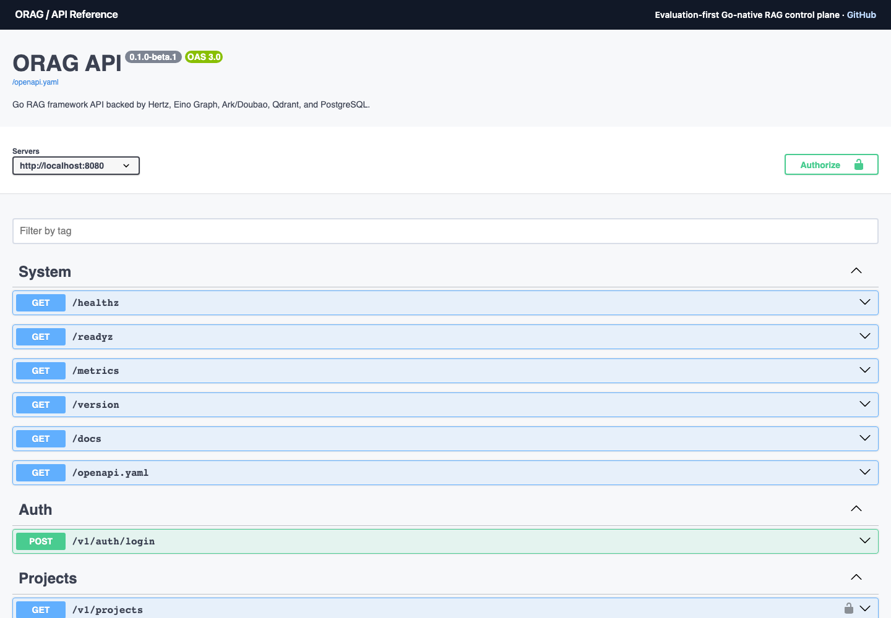

Evaluation-first · Go-native · Open source · v0.1.0-beta.2
Build RAG systems
you can measure.
A service and control plane for ingestion, retrieval, cited generation, traces, and reproducible evaluation.
Evaluation run
eval_demo_complete
Mock walkthrough
Retrieval quality gate
Trace captured
trace_demo_query✓Ingest
Connect sources and build a searchable knowledge base.
Query
Retrieve relevant context and return cited answers.
Trace
Inspect retrieval, generation, and latency.
Evaluate
Measure quality and protect changes with gates.
One command, no provider key
See the complete loop locally.
The mock walkthrough starts PostgreSQL, Qdrant, migrations, the API, Console, and a deterministic demo. It ingests content, returns a cited answer, records a trace, and runs an evaluation.
- Clone
github.com/shikanon/orag - Run
make demo - Open Console and the interactive API reference
orag — walkthrough
$ make demo ✓ migrations complete ✓ API and Console ready ✓ document ingested ✓ cited query complete ✓ trace recorded ✓ evaluation passed Console http://localhost:3000 API docs http://localhost:8080/docs
Public Go SDK
Embed the control plane.
client, err := orag.New(ctx, orag.MockConfig())
if err != nil { log.Fatal(err) }
defer client.Close()
result, err := client.Query(ctx, request)Production deployment
Run the published images.
Use the reference guide for GHCR images, migrations, health checks, TLS, rollback, and server-side secrets.
Read the deployment guide →Capability maturity
Know what is ready.
experimental
Exploring; contracts may change.
beta
Feature complete and under evaluation.
stable
Supported with compatibility guarantees.
OpenAPI
Explore every operation.
- REST endpointsRequest and response schemas
- Bearer authenticationAuthorize once, try requests
- Maturity labelsExperimental, beta, stable
P3 contextual retrieval tutorial →
P4 sparse retrieval tutorial →
P5 multi-query tutorial →
P6 rerank tutorial →
P7 graph retrieval tutorial →
P8 Context Pack tutorial →
Reproducible text-rag Benchmark →
Public Text-RAG 1.1.0 Pack →
Visual-document RAG Recipe →
Offline official text-rag Replay →
{kind=link}
